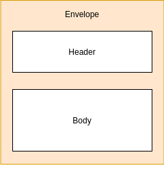

Grundlagen
Ursprünglich: Simple Object Access Protocol
Standardisiert vom W3C
Format zum maschinellen Austausch von Nachrichten (XML) über ein Netzwerk
Meist HTTP als Transportprotokoll
Explizite Beschreibung über WSDL
Erweiterung durch WS-* Spezifikationen
Aufbau einer Nachricht

Nachrichtenaustausch
<?xml version="1.0"?>
<soap:Envelope xmlns:soap="http://www.w3.org/2003/05/soap-envelope"
xmlns:as="http://www.anderscore.com/soap">
<soap:Header/>
<soap:Body>
<as:getCoursesRequest>
<as:title>Spring</as:title>
</as:getCoursesRequest>
</soap:Body>
</soap:Envelope>
<?xml version="1.0"?>
<soap:Envelope xmlns:soap="http://www.w3.org/2003/05/soap-envelope"
xmlns:as="http://www.anderscore.com/soap">
<soap:Header/>
<soap:Body>
<as:getCoursesResponse>
<as:course>
<as:title>Spring Power Workshop</as:title>
<as:tutor>Daniel Krämer</as:tutor>
<as:numDays>5</as:numDays>
<as:level>Advanced</as:level>
</as:course>
</as:getCoursesResponse>
</soap:Body>
</soap:Envelope>
WSDL
Web Service Description Language
Beschreibung eines SOAP Web Service in XML
Auslieferung durch Service selbst
Komponenten
Types: spezifische Datenstrukturen
PortTypes, Interfaces: angebotene Prozeduren
Bindings: Interfaces unter einem bestimmten Protokoll (z.B. HTTP)
Port bzw. Endpoint: konkrete Adresse (URI) eines Bindings
Service: Zusammenstellung von Endpoints
WSDL
<message name="GetCoursesInput">
<part name="body" element="xsd1:GetCoursesRequest"/>
</message>
<message name="GetCoursesOutput">
<part name="body" element="xsd1:TradePrice"/>
</message>
<portType name="CoursePortType">
<operation name="GetCourses">
<input message="tns:GetCoursesInput"/>
<output message="tns:GetCoursesOutput"/>
</operation>
</portType>
<binding name="CourseSoapBinding" type="tns:CoursePortType">
<soap:binding style="document" transport="http://schemas.xmlsoap.org/soap/http"/>
<operation name="GetCourses">
<soap:operation soapAction="http://www.anderscore.com/GetCourses"/>
<input>
<soap:body use="literal"/>
</input>
<output>
<soap:body use="literal"/>
</output>
</operation>
</binding>
<service name="CourseService">
<documentation>Provides information regarding anderScore courses</documentation>
<port name="CoursePort" binding="tns:CourseSoapBinding">
<soap:address location="http://www.anderscore.com/ws/courses"/>
</port>
</service>
Abgrenzung zu REST
Einsatzszenarien SOAP
Maschinenlesb. Schnittstellenbeschreibung
Ausnutzung der WS-* Standards
Integration von Altsystemen
Fokus auf XML
Einsatzszenarien REST
Zugriff verschiedenster Systeme
Anbindung clientseitiger Web Frontends
Nutzung vorhandener Caches
Starke Ressoucenorientierung
Übertragung anderer Formate als XML
XML Schema (XSD)
Definition verwendeter Datenstrukturen
<?xml version="1.0"?>
<xs:schema xmlns:xs="http://www.w3.org/2001/XMLSchema" xmlns:as="http://www.anderscore.com/soap"
targetNamespace="http://www.anderscore.com/soap" elementFormDefault="qualified">
<xs:element name="getCourseRequest">
<xs:complexType>
<xs:sequence>
<xs:element name="title" type="xs:string"/>
</xs:sequence>
</xs:complexType>
</xs:element>
<xs:element name="getCourseResponse">
<xs:complexType>
<xs:sequence>
<xs:element name="course" type="as:course"/>
</xs:sequence>
</xs:complexType>
</xs:element>
<xs:complexType name="course">
<xs:sequence>
<xs:element name="title" type="xs:string"/>
<xs:element name="tutor" type="xs:string"/>
<xs:element name="numDays" type="xs:int"/>
<xs:element name="level" type="xs:string"/>
</xs:sequence>
</xs:complexType>
</xs:schema>
JAXB Maven Plugin
<?xml version="1.0"?>
<plugin>
<groupId>org.codehaus.mojo</groupId>
<artifactId>jaxb2-maven-plugin</artifactId>
<version>2.5.0</version>
<executions>
<execution>
<id>xjc</id>
<goals>
<goal>xjc</goal>
</goals>
</execution>
</executions>
<configuration>
<sources>
<source>${project.basedir}/src/main/resources/xsd/</source>
</sources>
</configuration>
</plugin>
Endpoints
@Endpoint
public class CourseEndpoint {
private static final String NAMESPACE_URI = "http://www.anderscore.com/soap";
@Autowired
private CourseService courseService;
@PayloadRoot(namespace = NAMESPACE_URI, localPart = "GetCourseRequest")
@ResponsePayload
public GetCourseResponse getCountry(@RequestPayload GetCourseRequest request) {
Course course = courseService.findByTitle(request.getTitle());
GetCourseResponse response = new GetCourseResponse();
response.setCourse(course);
return response;
}
}
Spring Config
Aktivierung und Konfiguration von Spring WS
Einbindung der XML Schemata
Konfiguration der Endpoints (bei Spring Boot automatisch)
Spring Config
@EnableWs
@Configuration
public class SoapConfig extends WsConfigurerAdapter {
@Bean
public ServletRegistrationBean messageDispatcherServlet(ApplicationContext applicationContext) {
MessageDispatcherServlet servlet = new MessageDispatcherServlet();
servlet.setApplicationContext(applicationContext);
servlet.setTransformWsdlLocations(true);
return new ServletRegistrationBean(servlet, "/ws/*");
}
@Bean
public XsdSchema courseSchema() {
return new SimpleXsdSchema(new ClassPathResource("courseSchema.xsd"));
}
@Bean(name = "courses")
public DefaultWsdl11Definition defaultWsdl11Definition(XsdSchema courseSchema) {
DefaultWsdl11Definition wsdl11Definition = new DefaultWsdl11Definition();
wsdl11Definition.setPortTypeName("CoursesPort");
wsdl11Definition.setLocationUri("/ws");
wsdl11Definition.setTargetNamespace("http://www.anderscore.com/soap");
wsdl11Definition.setSchema(courseSchema);
return wsdl11Definition;
}
}
Spring Boot Web Services Starter
<?xml version="1.0"?>
<dependency>
<groupId>org.springframework.boot</groupId>
<artifactId>spring-boot-starter-web-services</artifactId>
<exclusions>
<exclusion>
<groupId>org.springframework.boot</groupId>
<artifactId>spring-boot-starter-tomcat</artifactId>
</exclusion>
</exclusions>
</dependency>
JAXB
Java Architecture for XML Binding
Marshalling und Unmarshalling von XML
Muss seit Java 9 explizit eingebunden werden
<profiles>
<profile>
<id>java11</id>
<activation>
<jdk>[11,)</jdk>
</activation>
<dependencies>
<dependency>
<groupId>org.glassfish.jaxb</groupId>
<artifactId>jaxb-runtime</artifactId>
</dependency>
</dependencies>
</profile>
</profiles>
Maven JAXB Plugin
<plugin>
<groupId>org.jvnet.jaxb2.maven2</groupId>
<artifactId>maven-jaxb2-plugin</artifactId>
<version>0.14.0</version>
<executions>
<execution>
<goals>
<goal>generate</goal>
</goals>
</execution>
</executions>
<configuration>
<schemaLanguage>WSDL</schemaLanguage>
<generatePackage>com.anderscore.soap</generatePackage>
<schemas>
<schema>
<url>http://localhost:8080/ws/courses.wsdl</url>
</schema>
</schemas>
</configuration>
</plugin>
Implementierung des Clients
public Course getCourse(String title) {
GetCourseRequest request = new GetCourseRequest();
request.setTitle(title);
log.info("Requesting course with title " + title);
GetCourseResponse response = (GetCourseResponse) getWebServiceTemplate()
.marshalSendAndReceive("http://localhost:8080/ws/courses", request,
new SoapActionCallback(
"http://www.anderscore.com/soap/GetCourseRequest"));
return response.getCourse();
}
Spring Config
Konfiguration des Clients (inkl. XML Marshalling)
@Bean
public Jaxb2Marshaller marshaller() {
Jaxb2Marshaller marshaller = new Jaxb2Marshaller();
marshaller.setContextPath("com.anderscore.soap");
return marshaller;
}
@Bean
public CourseClient courseClient(Jaxb2Marshaller marshaller) {
CourseClient client = new CourseClient();
client.setDefaultUri("http://localhost:8080/ws");
client.setMarshaller(marshaller);
client.setUnmarshaller(marshaller);
return client;
}
Aufgabe 5: SOAP Web Service implementieren
Importieren Sie das Projekt lesson03-boot-backend-soap in ihre IDE.
Schauen Sie sich das vorbereitete XML Schema tasks.xsd an. Was wird hier definiert?
Führen Sie mvn jaxb2:xjc aus, um die benötigten Klassen aus dem XML Schema zu generieren und so die Compile Errors zu beseitigen.
Implementieren Sie die Methodenrümpfe der Klasse TaskToMapperImpl. Wozu benötigen wir neben der TaskEntity überhaupt noch ein TaskTo?
Implementieren Sie die Methodenrümpfe des TaskEndpoints. Denken Sie auch an die fehlenden Annotationen.
Ergänzen Sie die fehlenden Beans in der SoapConfig.
Starten Sie die Anwendung und testen Sie diese mittels curl (Inhalt: getTaskRequest.xml) oder soapUI.
SOAP Web Services testen
Spring WS Test
MockWebServiceClient: Abfragen eines SOAP Web Service
RequestCreator: Erstellen eines SOAP Requests
ResponseMatcher: Prüfen der SOAP Response
<?xml version="1.0"?>
<dependency>
<groupId>org.springframework.ws</groupId>
<artifactId>spring-ws-test</artifactId>
<version>2.7.4</version>
<scope>test</scope>
</dependency>
Implementieren eines Integration Tests
@Test
public void testGetCourse_Exists() throws IOException {
Source requestPayload = new StringSource(
"<as:getCourseRequest xmlns:as=\"http://www.anderscore.com/soap\">" +
"<as:id>4711</as:id>" +
"</as:getCourseRequest>");
Source responsePayload = new StringSource(
"<ns2:getCourseResponse xmlns:ns2=\"http://www.anderscore.com/soap\">" +
"<ns2:course><ns2:id>4711</ns2:id><ns2:title>Spring</ns2:description></ns2:task>" +
"</ns2:getCourseResponse>");
Resource xsdSchema = new ClassPathResource("xsd/courses.xsd");
mockClient
.sendRequest(withPayload(requestPayload))
.andExpect(noFault())
.andExpect(payload(responsePayload))
.andExpect(validPayload(xsdSchema));
}
Aufgabe 6: SOAP Web Service implementieren
Überprüfen Sie die einzelnen Operationen des Service über den TaskEndpointMockTest.
Überprüfen Sie im TaskEndpointIntegrationTest, ob Sie einen Task anlegen und danach auch wieder abrufen können.